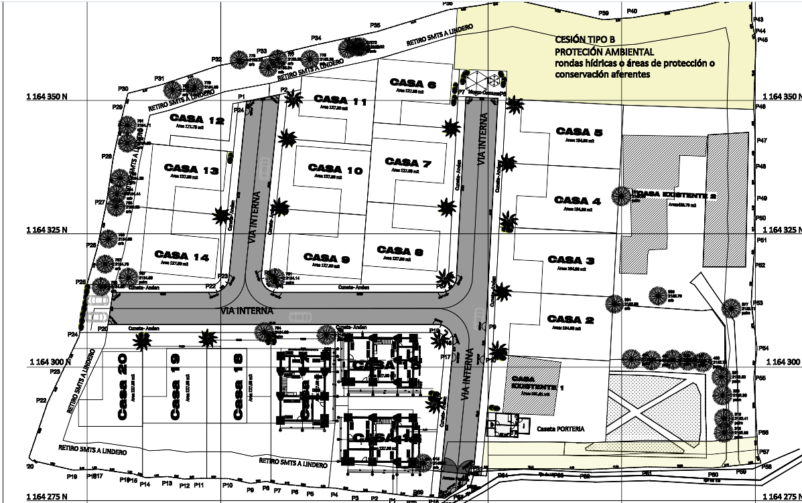

Sistema de aguas del Condominio Pontezuela
Suministro de agua potable, recolección separada de aguas negras y grises, tratamiento en el predio y aprovechamiento de lluvia para 19 casas nuevas y 2 existentes.
Resumen en cifras
Esquema sobre el plano
El terreno baja de occidente a oriente. Las redes de aguas residuales llegan por gravedad a la planta de tratamiento, en la zona verde entre la Casa existente 2 y la plaza, que es la parte más baja disponible fuera de la cesión ambiental. El agua potable entra por la portería, donde están la cisterna y el bombeo.

Datos de partida y supuestos
| Dato | Valor | Fuente o criterio |
|---|---|---|
| Viviendas | 19 + 2 | Plano urbanístico: Casas 2 a 20 y Casas existentes 1 y 2. La portería y el kiosko se incluyen dentro del margen. |
| Personas por vivienda | 5 | Valor conservador para casas de 128 a 195 m². |
| Altitud | 2 125–2 135 m | Clima frío (más de 2 000 m s.n.m.). |
| Dotación neta | 120 L/hab·día | Máximo para más de 2 000 m s.n.m., Resolución 0330 de 2017. |
| Pérdidas técnicas | 25 % | Máximo admitido; dotación bruta de 160 L/hab·día. |
| Retorno a aguas residuales | 0,85 | Coeficiente de retorno usual. |
| Reparto negras / grises | 30 % / 70 % | Sanitarios frente a duchas, lavamanos, cocina y lavadero. |
| Pendiente del terreno | ≈ 1,5 % al oriente | Cotas de árboles del plano: ≈ 2 134,5 m al occidente y ≈ 2 132,5 m al oriente. El modelo satelital (30 m) marca la misma dirección con más desnivel, pero es poco preciso a esta escala. |
| Lluvia anual | ≈ 2 000 mm | Valor típico del Valle de San Nicolás; a confirmar con la estación IDEAM más cercana. |
1. Suministro de agua potable
Fuente
Conexión al acueducto que preste servicio en la vereda (empresa de servicios públicos o acueducto veredal), con un solo medidor general a la entrada. Hay que solicitar el certificado de disponibilidad del servicio antes de avanzar. Si no hay red, la alternativa es una concesión de aguas de CORNARE (pozo o fuente superficial) con potabilización, lo que cambia bastante el costo.
Por qué cisterna y bombeo
El lote es casi plano. Un tanque en la parte alta (≈ 2 135 m) daría muy poca presión en los segundos pisos, y para lograr 15 m de presión haría falta una torre de unos 20 m. Por eso se propone una cisterna enterrada junto a la portería, que además recibe el agua por la vía de acceso, con un equipo de presión constante.
| Elemento | Predimensionamiento | Comentario |
|---|---|---|
| Caudal medio diario | 0,19 L/s | 105 hab × 160 L/hab·día |
| Caudal máximo diario | 0,25 L/s | k₁ = 1,3 |
| Caudal máximo horario | 0,40 L/s | k₂ = 1,6. Para la red interna manda la simultaneidad por unidades de consumo (NTC 1500): pico estimado de 2 a 3 L/s. |
| Cisterna | 25 m³ | Un día del consumo máximo (21,8 m³) con margen, por posibles cortes del servicio. Dos compartimentos para poder lavarla sin suspender el suministro. |
| Bombas | 2 × 2 HP | Una trabaja y la otra queda de reserva, con variador de velocidad y tanque hidroacumulador. Caudal de 3 L/s y altura de unos 33 m: casa más alta (2 135 m), 5 m al segundo piso, 15 m de presión de servicio y 5 m de pérdidas. |
| Red principal | PVC 2½″ | Por los andenes de las tres vías internas, con válvulas de corte por tramo y purga en los extremos. |
| Acometidas | ½″–¾″ | Una por casa, con registro y medidor individual para repartir el consumo. |
Agua lluvia para sanitarios y riego
Los techos de las 19 casas (≈ 1 425 m²) recogen en promedio unos 6,6 m³ por día, más que lo que gastan los sanitarios (3,1 m³/día). Un tanque de 2 m³ por casa, con su propia red hacia sanitarios y llave de jardín, reduciría la compra de agua en cerca de un 20 %. En los meses secos (diciembre a febrero y junio a agosto) el tanque se completa con agua del acueducto mediante una válvula de flotador, sin conexión directa entre las dos redes.
2. Aguas residuales: negras y grises por separado
Cada casa sale con dos tuberías: una de los sanitarios (aguas negras) y otra del resto (aguas grises). Las grises son el 70 % del caudal y se tratan con un sistema más sencillo y natural; las negras, que concentran la carga orgánica y los patógenos, van a un tratamiento anaerobio cerrado.
flowchart LR
subgraph Casa
S[Sanitarios]
D[Duchas · lavamanos · lavadero]
C[Cocina]
end
C --> TG[Trampa de grasas por casa]
S -- aguas negras --> TS[Tanque séptico ≈ 15 m³]
TS --> FAFA[Filtro anaerobio FAFA ≈ 5 m³]
D -- aguas grises --> SED[Sedimentador ≈ 4 m³]
TG --> SED
SED --> HUM[Humedal subsuperficial ≈ 120 m²]
FAFA --> CS[Caja de salida y muestreo]
HUM --> CS
CS --> R[Reúso en riego]
CS --> V[Infiltración o vertimiento con permiso]
Aguas negras
- Caudal: 3,2 m³/día.
- Red: PVC sanitaria de 6″ por el centro de las vías, pendiente mínima de 1 %, cámaras de inspección en cada cambio de dirección y como máximo cada 80 m. Acometidas de 4″.
- Tanque séptico: ≈ 15 m³ en dos cámaras, por ejemplo de 5,0 × 2,5 m con 1,6 m de profundidad útil. Limpieza de lodos cada dos años.
- Filtro anaerobio de flujo ascendente (FAFA): ≈ 5 m³ con lecho de grava o material plástico.
- Tanques prefabricados en polietileno o concreto, enterrados, con ventilación y tapas de inspección.
Aguas grises
- Caudal: 7,5 m³/día.
- Trampa de grasas en cada cocina (60 a 100 L), con limpieza mensual por parte del propietario.
- Red: PVC sanitaria de 6″ paralela a la de negras.
- Sedimentador: ≈ 4 m³ (medio día de retención) para retener sólidos y proteger el humedal.
- Humedal de flujo subsuperficial horizontal: ≈ 120 m², por ejemplo de 18 × 6,5 m con 0,6 m de grava, sembrado con plantas como heliconias, papiro o juncos. No hay agua expuesta, por lo que no genera olores ni mosquitos y funciona como zona verde.
Destino del agua tratada
Las dos líneas llegan a una misma caja de salida, donde se toman las muestras. A partir de ahí hay tres opciones, que pueden combinarse:
- Reúso en riego de zonas verdes, preferiblemente con el efluente del humedal, siguiendo la Resolución 1256 de 2021.
- Infiltración en el suelo con un campo de infiltración, si la prueba de percolación lo permite (Resolución 0699 de 2021). Puede requerir varios cientos de metros cuadrados.
- Vertimiento a la fuente hídrica de la ronda al norte, cumpliendo los límites de la Resolución 0631 de 2015.
Cualquiera de las tres requiere permiso de vertimiento de CORNARE (Decreto 1076 de 2015), que se tramita con este diseño, un estudio de suelos y una evaluación ambiental del vertimiento.
Separación negras / grises en el predio
Es la opción descrita arriba. Permite reusar agua, el humedal es barato de operar y la carga que llega al tanque séptico es menor. El costo extra está en la doble tubería y las doble acometidas.
Red única y planta compacta
Una sola red de 6″ hacia una planta prefabricada de lodos activados para unos 11 m³/día. Ocupa menos espacio, pero consume energía, requiere un operador y es más difícil reusar el agua. Si en el futuro llega alcantarillado público a la vereda, conviene conectarse.
3. Aguas lluvias de vías y zonas duras
Van por las cunetas que ya aparecen en el plano (cuneta–andén), en una red separada de las aguas residuales. Se descargan a la ronda hídrica a través de un desarenador y una estructura de disipación de energía. Conviene usar adoquín ecológico o zonas permeables en los parqueaderos para reducir el caudal.
Normativa aplicable
| Norma | Tema |
|---|---|
| Resolución 0330 de 2017 (Minvivienda) | Reglamento técnico del sector de agua y saneamiento (RAS): dotaciones, caudales y redes. |
| NTC 1500 | Código colombiano de fontanería: instalaciones hidráulicas y sanitarias dentro de las casas. |
| Decreto 1076 de 2015 | Permiso de vertimiento y concesión de aguas ante la autoridad ambiental (CORNARE). |
| Resolución 0631 de 2015 | Límites de vertimiento a cuerpos de agua superficiales. |
| Resolución 0699 de 2021 | Vertimientos de aguas residuales domésticas tratadas al suelo. |
| Resolución 1256 de 2021 | Reúso de aguas residuales tratadas. |
| Resolución 2115 de 2007 | Calidad del agua para consumo humano. |
Próximos pasos
- Levantamiento topográfico de detalle con curvas cada 0,5 m. Confirma la pendiente de cada vía, sobre todo la vía occidental, y la cota de la zona de tratamiento.
- Certificado de disponibilidad de acueducto y, si existe, de alcantarillado.
- Estudio de suelos con prueba de percolación en la zona de tratamiento y en las posibles áreas de infiltración.
- Confirmar la ronda hídrica y sus retiros con CORNARE, para ubicar el punto de vertimiento y mantener la planta fuera de la cesión.
- Diseño hidrosanitario definitivo, firmado por un ingeniero, con planos, perfiles de las redes y memoria de cálculo.
- Trámite del permiso de vertimiento y, si aplica, de la concesión de aguas.
Memoria de cálculo resumida
Qmd = 105 × 160 / 86 400 = 0,194 L/s · QMD = 1,3 × Qmd = 0,253 L/s · QMH = 1,6 × QMD = 0,404 L/s
Volumen diario = 16,8 m³ · día máximo = 21,8 m³ → cisterna 25 m³
Altura de bombeo ≈ (2 135 + 5 + 15 + 5) − 2 127,5 = 32,5 m · Potencia = 9,81 × 3 × 32,5 / 0,6 ≈ 1,6 kW (2,1 HP)
Aguas residuales = 0,85 × 120 × 105 = 10,7 m³/día (0,124 L/s) · Harmon F = 4,24 → Qmáx = 0,53 L/s
Negras 30 % = 3,2 m³/día · Grises 70 % = 7,5 m³/día
Tanque séptico (NBR 7229): V = 1 000 + N·(C·T + K·Lf) = 1 000 + 105 × (30,6 × 0,83 + 105 × 1) ≈ 14,7 m³
FAFA (NBR 13969): V = 1,6·N·C·T = 1,6 × 105 × 30,6 × 0,92 ≈ 4,7 m³
Sedimentador de grises = 7,5 × 0,5 día ≈ 3,7 m³
Humedal: A = Q·ln(C₀/Cₑ)/k = 7,5 × ln(150/30) / 0,10 ≈ 121 m² (DBO₅ de 150 a 30 mg/L)
Lluvia = 1 425 m² × 2,0 m × 0,85 = 2 422 m³/año ≈ 6,6 m³/día · Sanitarios = 25 % × 120 × 105 ≈ 3,1 m³/día